Beam Robotics IG Handle Dataset
Welcome to the IG Handle Public Dataset.
Platform and Sensors

| Sensor Type | Model | Relevant Specifications |
|---|---|---|
| Lidar | Velodyne VLP16 Lite | Vertical FOV: 30° 300,000 points per second 100 m range |
| Camera 1 | Flir BlackflyS | 3.2 MP resolution, RGB, 55fps, Fujinon Lens, 2.7mm focal length, 2/3 inch image circle, C mount, FOV: 185° x 140° |
| Camera 2 | Flir BlackflyS | 12.3 MP resolution, RGB, 23fps, Flir Tamron Lens, 8mm focal length, 1/1.8 inch image circle, C mount, FOV: 50.8° x 38.6° |
| IMU | Xsens MTi-30 | Frequency: 400 Hz, Data types: xyz acceleration, xyz angular velocity, absolute heading, east-north-up orientation |
| Micro-controller | Teensy 3.6 |
Available Data
Calibration
| Dataset | Date | Bag | Thumbnail |
|---|---|---|---|
| Park Street Bridge | 2021-10-07, 9:38 | link | 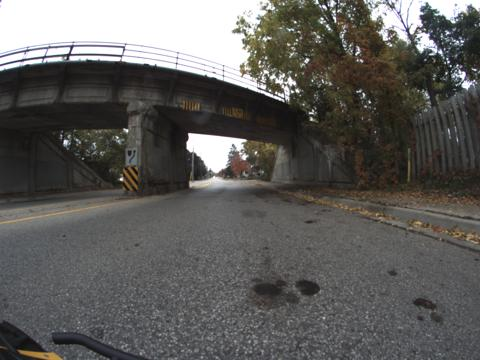 |
| Park Street Bridge | 2021-10-07, 10:03 | link |  |
| Park Street Bridge | 2021-10-07, 10:08 | link |  |
| Park Street Bridge | 2021-10-07, 10:15 | link | 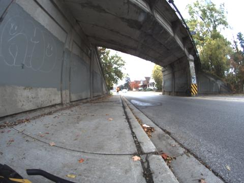 |
| Kitchener Parking Garage | 2021-10-07, 10:48 | link | 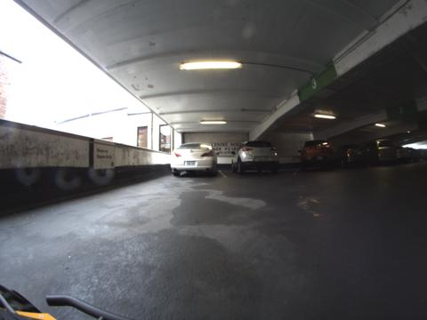 |
| Kitchener Parking Garage | 2021-10-07, 11:01 | link | |
| Conestogo Bridge | 2021-10-07, 13:11 | link | 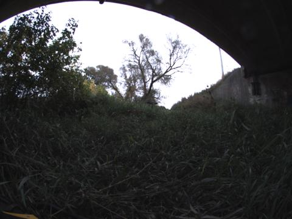 |
| Conestogo Bridge | 2021-10-07, 13:51 | link | 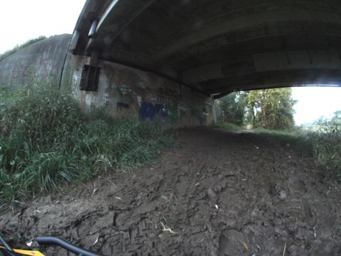 |
| Conestogo Bridge | 2021-10-27, 16:21 | link | 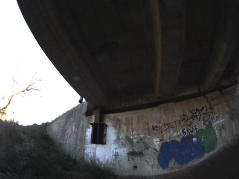 |
| Conestogo Bridge | 2021-10-27, 16:28 | link | 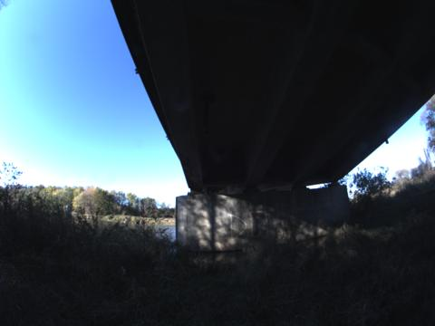 |
| Conestogo Bridge | 2021-10-27, 16:33 | link | 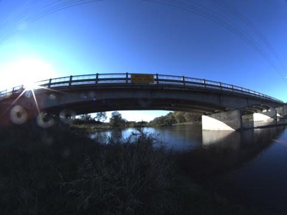 |
| RCH | 2021-10-08, 17:36 | link | 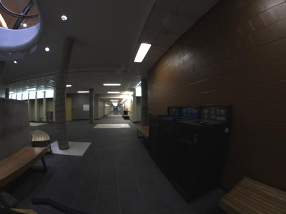 |
| RCH | 2021-10-08, 17:39 | link | 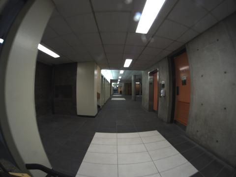 |
| Structures Lab | 2021-10-27, 14:15 | link | 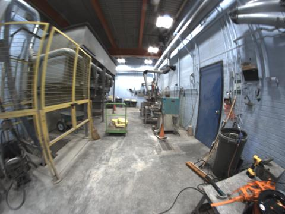 |
| Structures Lab | 2021-10-27, 14:22 | link | 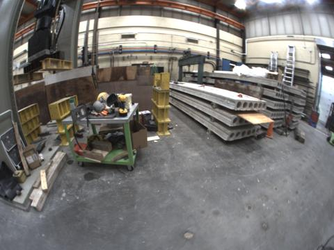 |
| Hydro Lab | 2021-10-20, 12:39 | link | 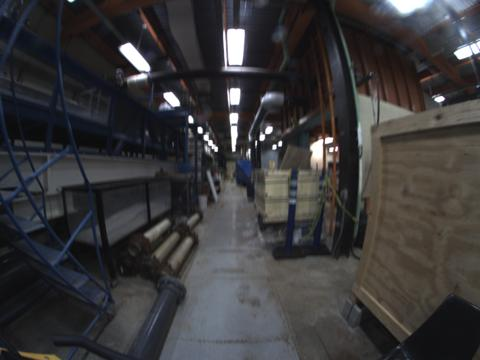 |
| Hydro Lab | 2021-10-20, 12:48 | link |  |
| E5SDC | 2021-10-21, 14:18 | link | 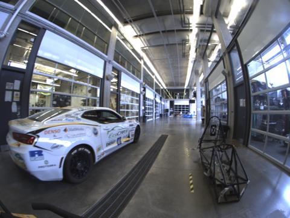 |
| Campus Outdoors | 2021-10-08, 17:47 | link | 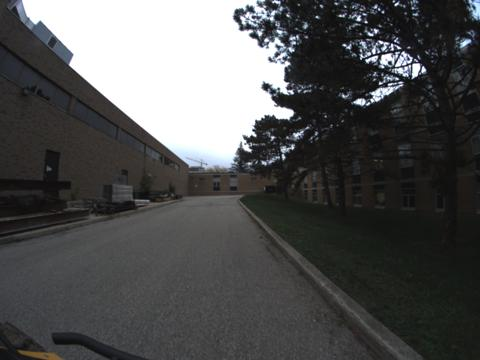 |
Scripts/Processing
All bags in the dataset contain raw data, this includes the hardware timestamp triggers which need to be aligned with the data. The script